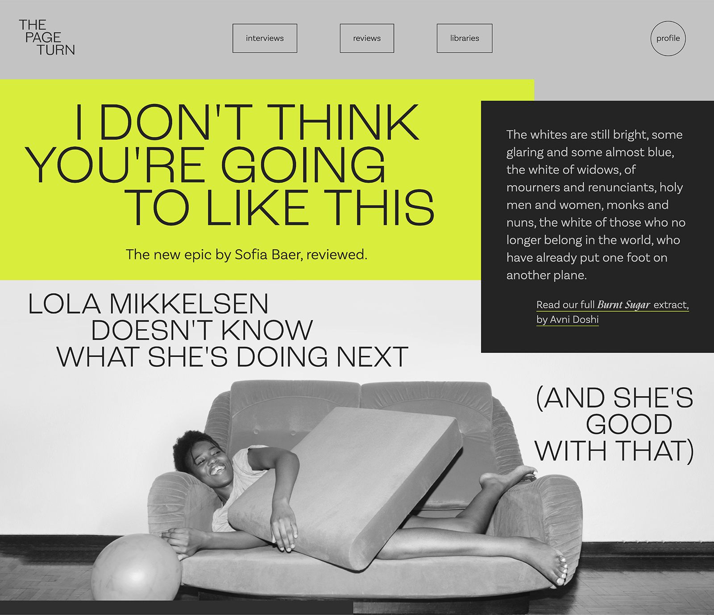
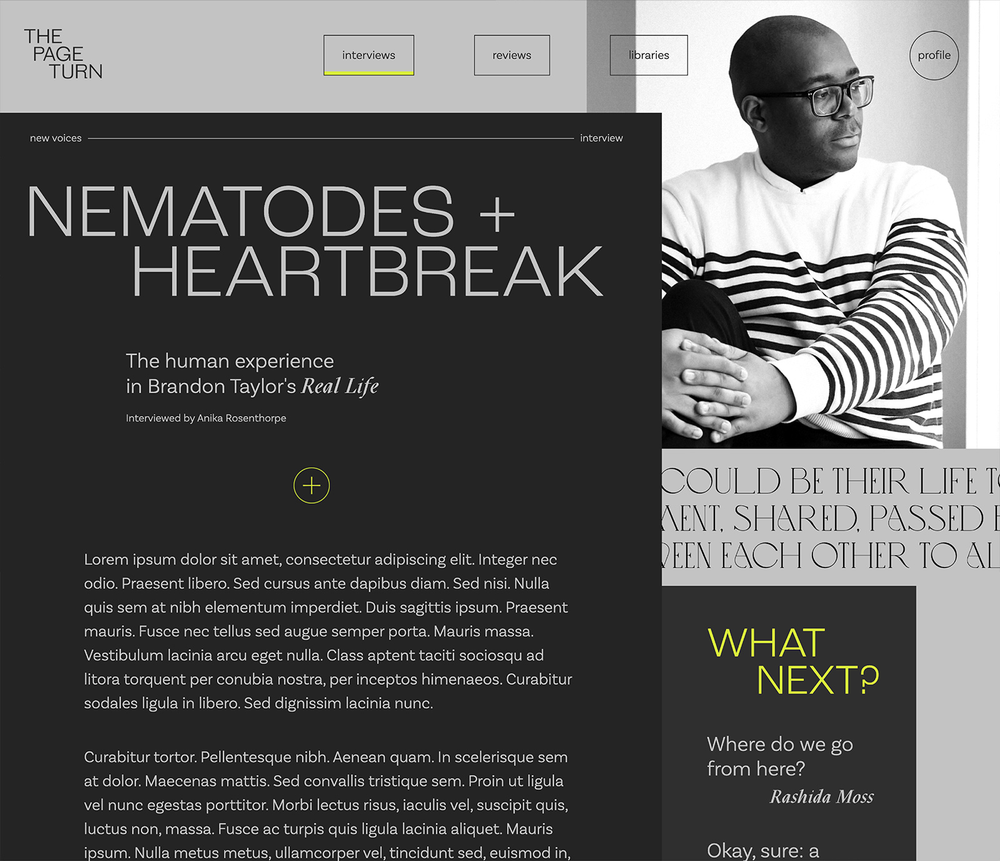
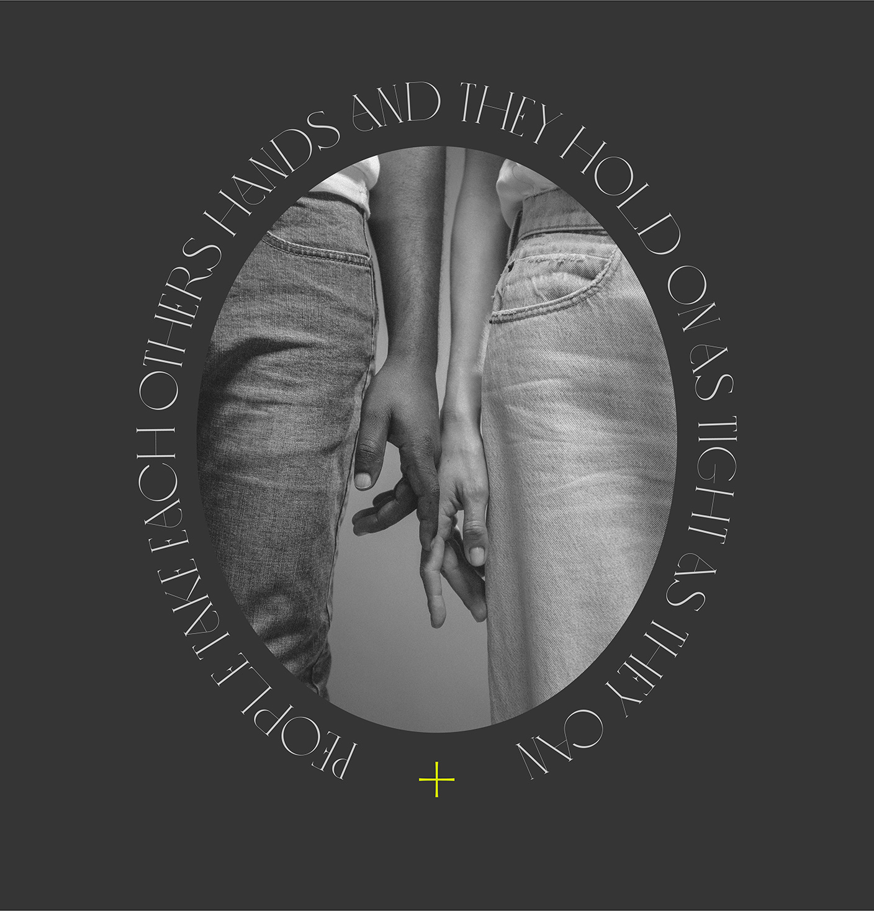
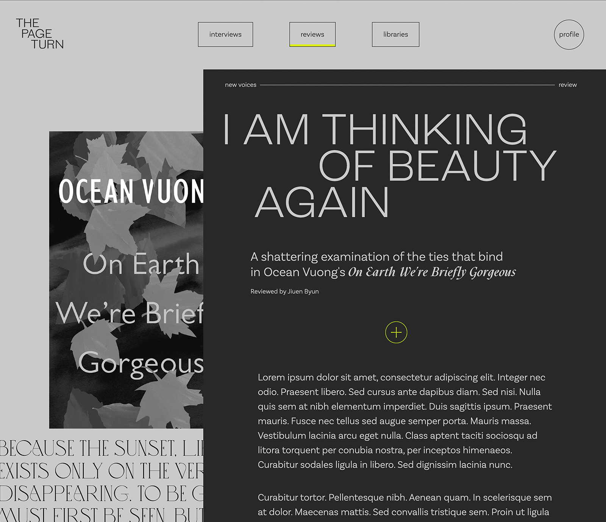
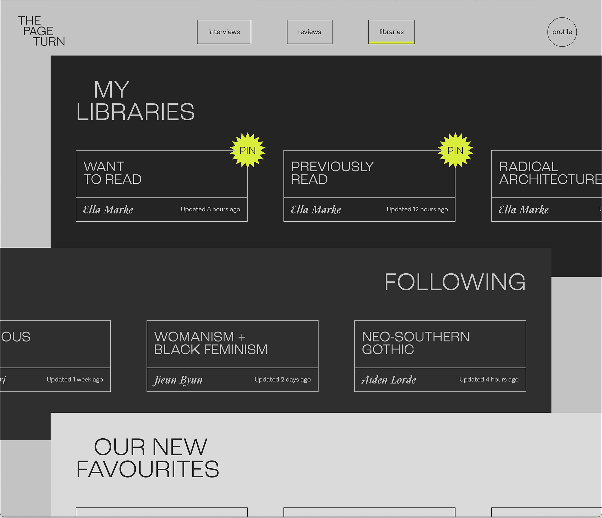

The Page Turn
Creating an online space for book lovers.
| project type | skills used | key words |
| Personal Project | Web Design, HTML, CSS, Branding | Literature, Digital Design, Editorial |

| down with goodreads! | one |
|---|---|
| I really love to read. I also love the whole world surrounding reading — criticism, interviews and essays about literature and sharing books with my community. I'm often left frustrated as Goodreads, the Goliath of the digital book community, often doesn't fulfil the needs of readers. Its UI is clunky and outdated, its recommendations are limited and most of its community features are so hidden away that they're not as utilised as they should be. | |
| down with goodreads! | two |
|---|---|
| Inspired by my poor user experience, I designed what I would love in a book-focused website: an interesting, diverse array of essays, criticisms and interviews about literature, libraries curated by myself or people who interest me and a user experience built around a love of literature and the arts. | |

What's your
favourite book?


| making the digital feel analogue | one |
|---|---|
| As I shaped the layout of the site, I layered and overlapped elements, which can sometimes change order to move in and out of the way of content. This feeling of layering connects the digital experience, in a subtle way, to the experience of leafing through papers and pages. | |
| Creating libraries | one |
|---|---|
| Users can curate and follow libraries — lists of saved books. These can be used to keep track of what they want to read and what they have read, whilst also giving them the ability to link books together and discover new reads through genre and idea-curated lists. Authors and contributors to the site create their own public libraries which users can follow and save. | |

| photo credit to: | |
|---|---|
| William J Adams, Maksim Goncharenok, Ketut Subiyanto, RF Studio, Wherbson Rodrigues and Amusan. | |